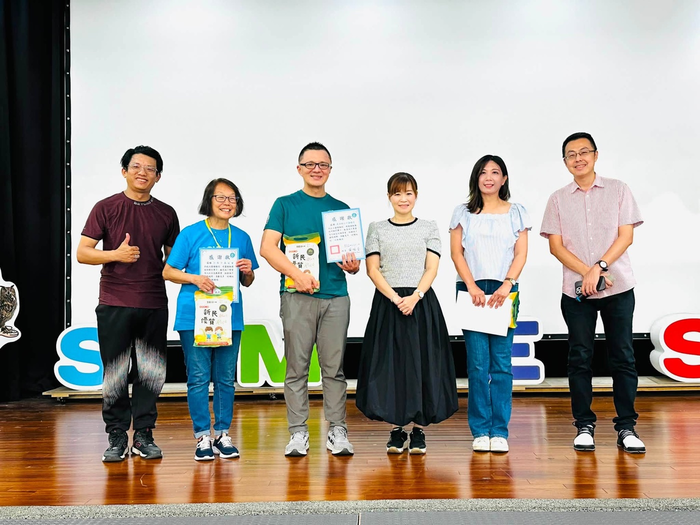
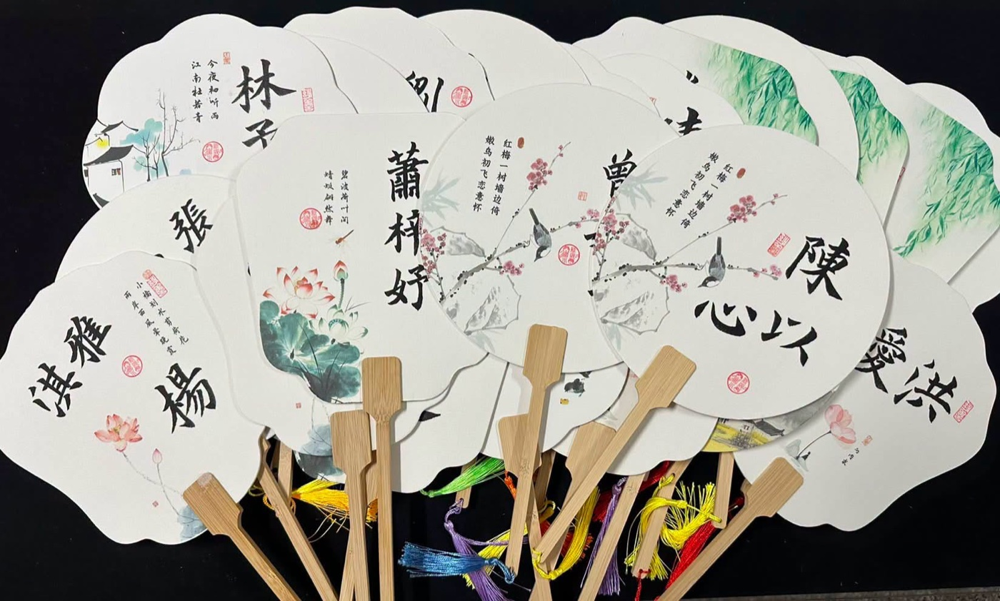
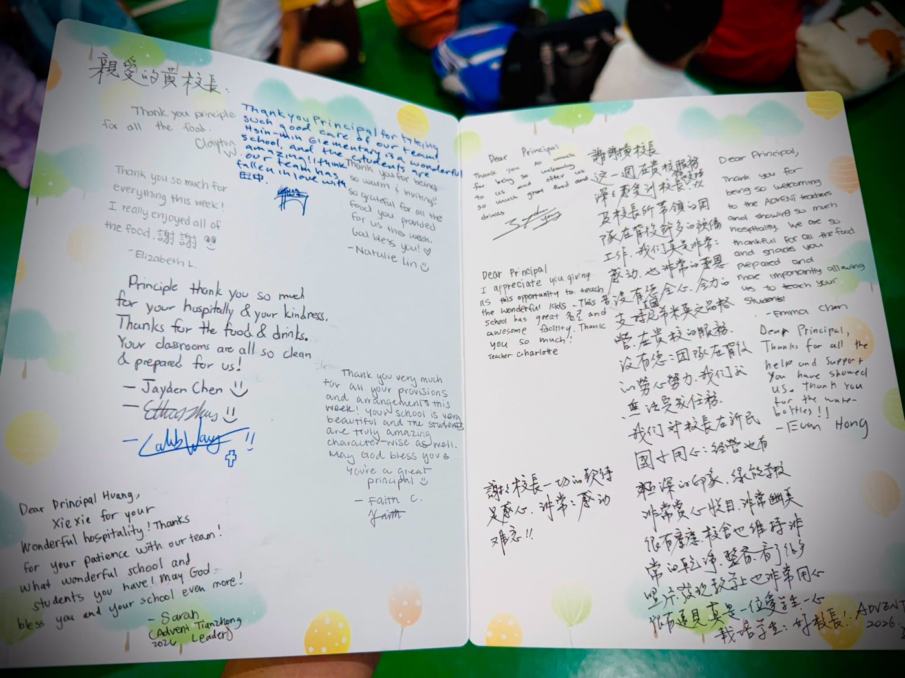

Five days ago, a group of enthusiastic young volunteers from the United States arrived at Hsinmin — full of smiles, energy, and a heart full of love for the children of Taiwan. Today, as the 2026 Nehemiah English Character Camp comes to a beautiful close, we look back with gratitude, joy, and hearts deeply moved by what we shared together.
Over five unforgettable days, our students found the courage to speak English, the confidence to connect with the world, and the warmth of friendship that crosses every border. Through games, drama, singing, and heartfelt conversations, they didn't just learn language — they learned to respect, care, cooperate, and share. English became a bridge to the world; character became a lifelong companion.
What moved us most deeply is this: these American volunteers — to return to Taiwan and serve — personally fundraised for their own airfare and travel expenses. They gave up their summer break, put down their other work, and spent five precious days walking alongside our children. They brought not just English, but life itself speaking to life.
At the closing ceremony, Hsinmin Elementary presented each volunteer and partner organization with a heartfelt bilingual certificate of appreciation, a beautiful calligraphy fan personally brushed by Teacher Ye Hsin-Mei, and a special Hsinmin folder. In return, the Nehemiah team surprised us with handwritten thank-you cards and the iconic 2026 commemorative T-shirt — a keepsake that makes this friendship even more precious.
With deepest thanks to · 誠摯感謝
- Nehemiah Foundation · 尼希米基金會
- Gloria English Center · 葛洛麗亞美語中心
- Tianzhong Bread of Life Christian Church · 基督教田中靈糧堂
- All volunteers from the United States and Taiwan · 所有來自美國與臺灣的志工夥伴
The most beautiful view in education is not just what happens inside the classroom — it is a group of people coming together because of a shared belief, and through willingness to give, helping more children see the world and discover a better version of themselves.
Five days may be short,
but the friendship will never end.
The camp is over,
but the dream is only just beginning.
We look forward to next summer — see you again at Hsinmin. 🅍💙
🌏❤️五天的相遇，一輩子的感動❤️🌏
✨2026尼希米英語品格營 圓滿落幕✨
五天前，來自美國的 ADVENT 志工團隊帶著熱情與笑容來到新民；五天後，孩子們帶著更大的自信、更開闊的視野，以及滿滿的回憶，為今年的尼希米英語品格營畫下最美的句點。
這五天，我們看見孩子勇敢開口說英文、主動與外國老師互動，在遊戲、戲劇、歌曲與課程中，不只學習語言，更學會尊重、關懷、合作與分享。英語成為溝通世界的橋梁，品格則成為陪伴孩子一生的力量。
最令人感動的是，這群來自美國的青年志工，為了回到臺灣服務，自行籌措機票與旅費，放下暑假與工作，用五天的時間陪伴孩子成長。他們帶來的不只是英語，更用生命影響生命，讓孩子感受到跨越國界的愛與付出。
結業式中，新民國小特別致贈中、英文感謝狀、由書法老師葉馨鎂老師親筆揮毫的書法扇，以及新民國小專屬資料夾，向每一位默默付出的單位與志工表達最誠摯的謝意；同時，也收到尼希米團隊精心準備的感謝卡片與2026紀念T-shirt，讓這份珍貴的情誼更加深刻。
誠摯感謝 尼希米基金會、葛洛麗亞美語中心、基督教田中靈糧堂，以及所有來自美國與臺灣的志工夥伴，因為有你們，孩子們擁有了一個充滿歡笑、溫暖與收穫的夏天。
五天雖然短暫，友誼不會停留在今天
營隊雖然結束，夢想才正要啟程
期待明年夏天，我們再次相聚新民
一起用英語連結世界，用品格點亮未來🌍💙
Words About Gratitude & Connection英語學習角 · 和感謝與連結有關的小單字
Six key words — tap 🔊 to listen, then try the conversation and quiz.
六個關鍵字，點 🔊 聽發音，再試試對話和小考。
情境：兩位同學聊起尼希米品格營的結業式。